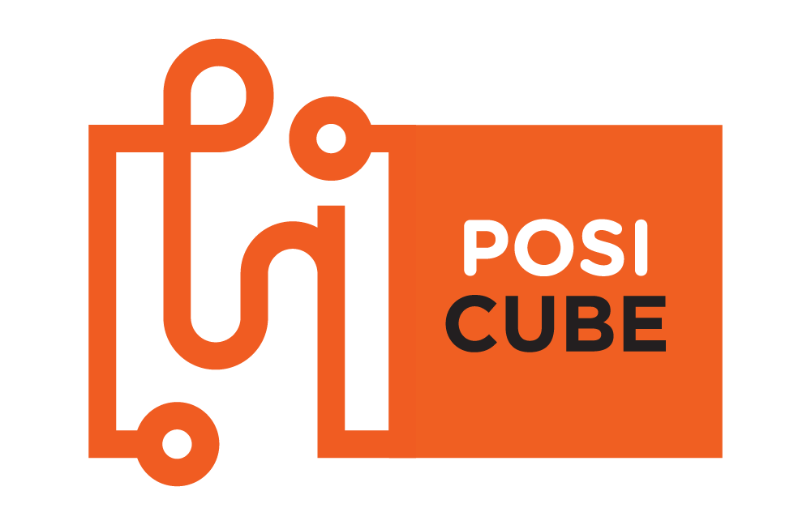
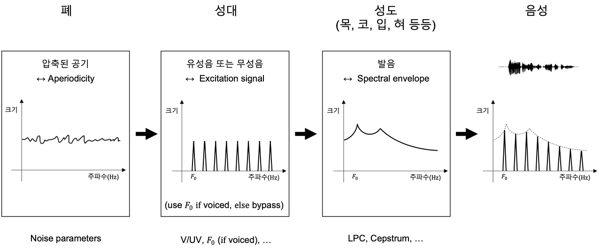

18년도 입학 당시에 게임 개발자의 꿈을 가지고 있었습니다.
평소 게임을 좋아하기도 했고
고등학생 때 했던 게임개발 경험을 살리면 좋겠다고 생각했기 때문입니다.
꿈을 이루기 위해 게임제작 동아리에 입부하여 게임개발도 해보고,
자기계발도 하면서 나름대로 열심히 했었지만
하다보니 저와 맞지 않다는 것을 알게 되었습니다.
하지만 개발자로서의 길을 포기하고 싶지 않았습니다.
정확한 분야를 정하기 위해 구직구인 사이트에서 기업들을 둘러보았습니다.
그 중 "포지큐브"라는 인공지능 회사를 알게 되었습니다.
이 회사는 인공지능 상담사를 개발하는데 현재 고객의 요구사항을
통화로 딜레이 없이 답변해주는 수준까지 개발했습니다.
이를 보며 정신적으로 스트레스 받는 업무를 인공지능이
대체할 수 있음에 사회에 조금이라도 도움을 줄 수 있다고
생각이 들어 인공지능 기술에 매력을 느꼈습니다.
하여 ‘포지큐브’회사에 취업을 목표로 삼게되었습니다.

↑포지큐브 회사 사진
Future Plan
↑클릭해보세요.
인공지능 분야에 들어서기 위해서 필수적인 세가지 공부를 할 것입니다.
먼저영어를 공부할 것입니다.
인공지능 기술은 현재 계속 발전되고 있는 기술 중 하나입니다.
인공지능 기술을 선도하는 곳은 주로 외국이기 때문에 영어를
먼저 알아야 최신기술을 빠르게 접해보고 배울 수 있습니다.
이 기술 뿐만 아니라 대부분의 컴퓨터 공학지식은 영어를 알면
알게되는 지식의 양이 달라집니다. 따라서 영어는 기본으로 할 줄
알아야 하므로 꾸준히 영어단어를 외우고 독해능력도 쌓을 것입니다.
다음으로 딥러닝 관련 책 중
‘밑바닥부터 시작하는 딥러닝’이라는 책을 공부하여
딥러닝 기술을 배울 것입니다. 이 책을 따라하면서
전반적인 딥러닝 기술을 이해하여 나중에 딥러닝 관련 모델을
하나 생성해볼 계획입니다.
딥러닝을 다루는 과정에서 파이썬을 이용하게 되므로
파이썬 언어공부도 할 것입니다. 기본적인 문법은 이미 공부했고,
코딩테스트 문제를 풀면서 알고리즘 사고력을 키우고
언어의 숙련도를 키울 예정입니다.
관심기술 혹은 기업 관련 상세 내용
기업 관련 상세 내용
↑포지큐브 소개영상
포지큐브는 AI 기술 전문 회사로,
공공기관 및 민간기업에게 AI Voice & Vision 서비스를 제공하고 있습니다.
우리는 뉴스에서 들어본 것 같은 AI 기술이 아닌, 삶에 적용되는 AI 서비스를 제공하고 있습니다.
AI 기술이 우리 삶의 당연한 일부분이 되는 그 날을 향해 노력하고 있습니다.
AI 전화 응대 서비스, AI based OCR 서비스 등의 AI 서비스를 개발·운영합니다.
#. 포지큐브는 성장하고 있습니다.
삼성전자, LG전자 등 다양한 배경을 가진 사람들이 모여, 회사와 개인의 성장을 위해 노력합니다.
2017년 창업한 이래로 TIPS, SW 고성장클럽, KB 스타터스 등에 선정되며 그 가능성을 인정 받았을 뿐만 아니라, 2020년에는 캡스톤 파트너스, HB 인베스트먼트, 윈 벤처 투자, BA 파트너스에서 시리즈 A 투자유치에 성공했습니다.
정부 기관 및 여러 기업이 포지큐브의 AI 서비스를 이용중이며, 2020년에는 매출 200% 성장을 이미 달성 하였습니다.
(2019년 10억, 2020년, 20억, 2021년 50억)
#. AI Transformer로 업계 선두로 나아가고 있습니다.
탁월한 기술력을 바탕으로 시대의 흐름을 주도하는 'AI 전문 서비스' 회사가 되어가고 있습니다.
AI 기술을 통한 혁신은 이미 시작 되었으며, 우리는 그 변화의 중심에 있습니다.
2000년대에는 닷컴 기업, 2010년대에는 스마트폰. 2020년대를 대표하는 기술은 'AI'입니다.
#. '생활 곳곳에 스며드는 AI'를 지향합니다.
'OOO 담당자와 통화 할 수 있을까요 ?' 라는 요청에 AI가 전화를 돌려줍니다.
카메라에 신분증을 잠시 비추면 AI가 본인 확인을 진행합니다.
'오늘 몇 시까지 운영하시나요?' 라는 질문에 AI가 영업시간을 안내합니다.
#. 포지큐브 회사연혁 2021
06. 자회사 (인슈어랩스) 2센터 오픈
05. KB 국민카드 음성 AI 시스템 구축 프로젝트
04. 혁신시제품 공공기관 서비스 오픈 (성남시청, 구로구청, 경북개발공사, 동래구청)
03. 조달청 우수제품 선정 (나라장터)
03. 자회사 (인슈어랩스) 1센터 오픈
2020
12. 자회사 설립
(인슈어랩스, 보험전문 인공지능 컨택센터)
10. POST-TIPS 선정
09. 조달청 혁신시제품 선정
06. robi 리셉션 (Outbound + Telemarketing)
(고객사 : Chubb, GS, SK M&S, 신한 카드)
06. Microsoft for Startups 프로그램 (Tier 1)에 선정
04. 한국정보통신기술협회(TTA) GS인증 1등급 획득
SW 고성장 클럽 200 선정(과학기술정보통신부)
03. KB금융지주, KB스타터스 선정
02. 캡스톤 파트너스 등 4개 VC로부터 시리즈 A 투자 유치
2018
11. 농업협동조합(양서농협) AI robi리셉션 베타 서비스
09. 캡스톤 파트너스 Seed 투자 유치
04. TIPS 과제 선정
2017
11. robi스캐너 (AI OCR 솔루션) 개발 완료
07. 하나금융지주 1Q Lab 스타트업 5기 멤버 선정 (빅데이터 및 자연어 처리 기술)
05. 포지큐브(POSICUBE) 창업
관심기술
인공 지능은 인간의 지능을 모방하여 작업을 수행하고 수집한 정보를 기반으로 반복적으로 개선할 수 있는 시스템 또는 기계를 의미합니다.
포지큐브 회사에서는 이 기술을 사용하여 지연시간없이 실시간으로 고객과 소통할 수 있는 인공지능 상담사를 개발했습니다.
이 때 음성데이터는 글자처럼 정확한 지표가 없는 데이터인데 어떻게 목소리를 인식할 수 있는지 궁금했습니다.
조사해본 결과 이를 이해하기 위해서는 인간이 음성을 만드는 과정과 소리를 듣는 과정을 이해할 필요가 있습니다.
[음성이 만들어지는 과정]
발음을 결정하는 소리의 최소 단위인 음소(phoneme)는 크게 2가지로 구분할 수 있는데,
발성할 때 성대(vocal cord)의 진동을 동반하는 유성음(voiced)과 진동 없이 성대를
통과하는 무성음(unvoiced)이 있습니다.

위 그림은 사람이 음성을 만들 때 사용하는 기관들의 동작과 이들을 각각 공학적으로
모델링한 특징 정보들의 관계를 나타냅니다. 처음 폐에서 만드는 압축된 공기는 백색소음에
가까운 비주기성(aperiodicity) 신호로, 정규분포와 같이 쉽게 사용할 수 있는 확률분포로
모델링할 수 있습니다. 성대를 통과한 직후의 여기 신호는 유성음/무성음 여부에 따라 구분되며,
유성음의 경우 기본 주파수 등의 특징을 담고 있습니다. 이후 목, 코, 입, 혀 등의 성도(vocal tract)를
통과하며 발음이 결정되는데, 발음마다 성도의 구조가 달라져 증폭되는 주파수 대역과 감쇠되는 대역
역시 달라지게 됩니다. 이를 스펙트럼 포락선(spectral envelope)이라고 하며,
발음의 종류를 결정하는 주요한 특징으로 꼽힙니다.
이렇게 각 발성 기관의 동작을 공학적으로 모델링하고,
각 특징들을 추출, 변환, 예측하는 기술이 음성압축(speech coding),
음성변환(voice conversion), 음성합성(speech synthesis) 등의 영역에 적용되어
연구 개발되어 왔습니다.
[음성을 듣는 과정]
사람이 소리를 듣는 과정을 살펴보면 다음과 같습니다.
소리를 듣는 기관인 귀는 귓바퀴에서 소리를 모으고,
고막과 이소골이 진동하여 달팽이관의 청각 세포를 자극하면 전기 신호가
발생해 이를 뇌에 전달하는 방식으로 동작합니다.(출처: 다음백과)
달팽이관은 마치 길게 늘어진 관을 돌돌 말은 모양과 같으며,
액체로 가득 차 있는 이 관에는 청각 세포들이 일렬로 나열해 있는 코르티 기관이 존재합니다.
밖에서 진동이 전달되면 코르티 기관의 특정 청각 세포가 자극되어 전기 신호를 발생시키는데,
청각 세포마다 인지할 수 있는 주파수 대역이 다릅니다.
멜 스케일(이하 Mel scale)은 실제 주파수 정보를 인간의 청각 구조를 반영하여
수학적으로 변환하기 위한 대표적인 방법입니다. 높이가 다른 2개의 음을 사람에게 들려줬을 때,
사람이 인지하는 차이와 두 음의 실제 주파수 차이를 다양하게 조사하여 통계가 구축되었고,
이를 대략적으로 따라가는 간단한 함수로 두 단위 간의 관계가 정의되었습니다.(출처: Wikipedia)
Mel Scale은 주파수 성분을 중요도에 따라 차등적으로 사용하기 위한 좋은 지표로써 다양한 음성처리
분야에서 사용되고 있습니다.
[AI에게 음성을 가르치려면?]
가장 간단한 예시로 목소리의 성별을 분류하는 모델을 만들고 싶다고 한다면,
목소리의 높이 정보가 담겨있는 기본 주파수를 사용하여 중간에 기준선을 긋는 것만으로도
어느 정도 분류 정확도를 얻을 수 있을 것입니다. 하지만 음성처리에는 음성인식,
음성합성, 화자인식, 분류 등 훨씬 풀기 어려운 연구 분야들이 존재하며, 이들을 해결하기
위해서는 우선 음성의 어떤 정보를 사용해야 하는지를 최우선으로 고민해야 합니다.
대표적으로 음성을 문장으로 변환하는 음성인식 모델을 만들려면 화자가 누구든 상관없이
문장을 동일하게 인식해야 하므로 기본 주파수와 같이 화자에 종속적인 정보보다는 발음 정보와
같은 것이 더 중요합니다.
Mel-Frequency Cepstral Coefficient(MFCC)는 음성인식 영역에서 대표적으로 사용되는
특징 벡터입니다. MFCC를 추출하는 과정은 다음과 같습니다.
전체 오디오 신호를 일정 간격으로 나누고 푸리에 변환을 거쳐 스펙트로그램을 구합니다.
각 스펙트럼의 제곱인 파워 스펙트로그램에 Mel scale filter bank를 사용해 차원 수를 줄입니다.
cepstral 분석을 적용해 MFCC를 구합니다.
Cepstral 분석은 푸리에 변환을 거쳤을 때 시간 축에서 천천히 변하는 정보가 낮은 주파수 성분에 위치하고,
빨리 변하는 정보가 높은 주파수 성분에 위치한다는 점에 착안한 방법입니다.
주파수 축에서 다시 한번 푸리에 변환을 사용하면 천천히 변하는 스펙트럼 포락선 정보는 낮은 성분에 위치하고,
빨리 변하는 여기 신호 정보는 높은 성분에 위치하게 되어, 적절한 취사선택을 통해 원하는 정보가 내재된 특징
벡터를 만들 수 있습니다.
MFCC를 계산하는 과정은 다소 복잡하지만, 그만큼 효과적인 음성 정보를 추출해 낼 수 있습니다.
인간의 청각 구조를 반영한 Mel scale 기반 filter bank를 사용하여 효율적으로 특징을 압축할 수 있고,
cepstral 분석을 통해 음성인식에 필요한 발음 특성을 스펙트럼 포락선 정보로 구할 수 있습니다.